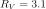
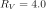
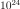

4.1.14. Dust: dust scattering model¶
This model calculates the effective transmission of dust that scatters photons out of the line of sight. No re-emission is taken into account, i.e. it is assumed that all scattered photons are lost from the line of sight. This makes the model useful for instruments with a high spatial resolution (i.e, the spatial resolution is much better than the typical size of the dust scattering halo).
Dust scattering is described for example by Draine et al. (2003) In that paper, a link is given to the website of Draine. This website contains slightly updated cross sections for three cases as listed below. The scattering is computed for a Carbonaceous - Silicate Model for Interstellar Dust. The cases are:
set=1: for

;set=2: for

;set=3: for .
Warning
For any instrument where the extraction region has a size comparable to the size of the dust scattering halo, this model should not be used, as the scattered X-rays will fall within the extraction region. Take care when fitting data from different instruments simultaneously.
Warning
This model only calculates the dust scattering, not the dust absorption.
The parameters of the model are:
- nh:
Hydrogen column density in
 .
Default value:
.
Default value:  (corresponding to
(corresponding to

, a typical value at low Galactic
latitudes).
- icov:
Type of the covering fraction. Default value: 2 (constant, set by fcov). If icov=1, full covering is applied. If icov=3, covering fraction follows a tangent function that increases with energy. If icov=4, covering fraction follows an inverse tangent function that decreases with energy. See description in
pion.- fcov:
The covering factor of the absorber if icov=2. Default value: 1 (full covering). If icov=3 or 4, it sets the covering factor at the high energy end.
- lcov:
The covering factor of the absorber at the low energy end. Default value: 1. lcov is applied only when icov=3 or 4. See description in
pion.- ecov:
The energy when the covering factor changes from lcov to fcov. Only applied if icov=3 or 4.
- acov:
The width of the transit on covering factor. Only applied if icov=3 or 4.
- set:
The set of cross sections being used. See table above.
Recommended citation: Draine et al. (2003).